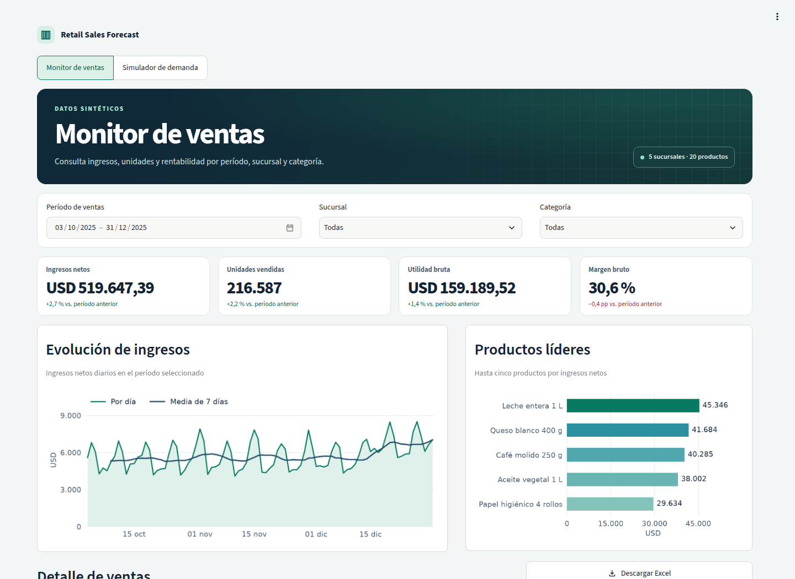
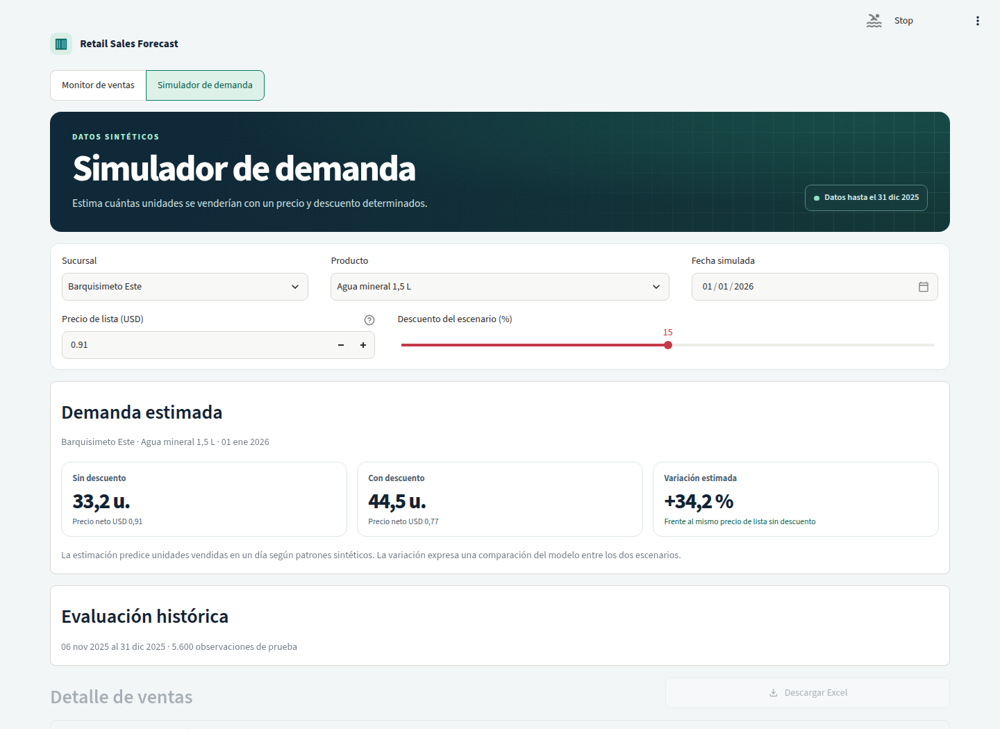

Tamaño del dataset
73.100Observaciones diarias sintéticas por sucursal y producto.
Portafolio de datos · Samuel Revollo
Un caso de analítica retail que reúne un monitor de ventas y un simulador de precio y descuentos para una cadena ficticia.

La simulación cubre 2024 y 2025, con 5 sucursales y 20 productos.
Observaciones diarias sintéticas por sucursal y producto.
El margen bruto cayó 1,53 puntos porcentuales respecto a 2024.
WAPE en las últimas ocho semanas, frente a 24,43 % de la mediana histórica.
NumPy genera un panel reproducible. SQLite relaciona sucursales, productos y ventas. Las consultas calculan los indicadores con JOIN y GROUP BY.
Streamlit presenta los filtros y gráficos de Matplotlib y Seaborn. El Excel reúne las filas filtradas y un resumen con indicadores.
Una regresión de Poisson en scikit-learn permite comparar unidades estimadas para una misma fecha, sucursal y producto, con y sin descuento.
